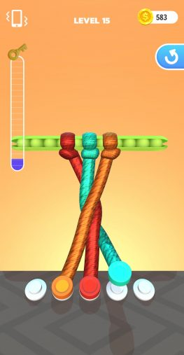

HOW
TO UNTANGLE KNOTS – TIPS, TRICKS, AND CHEATS
So
you want to untangle all of the knots, eh? Well, you’ve come to the
right
place. We’ve got all of the tips, tricks, and cheats you could possibly
want,
or need, below.

Sometimes,
the only route forward is to backtrack, and that’s okay. We don’t mean
to get
philosophical though; we’re still talking about Tangle Master 3D.
Sometimes
you’ll untangle a knot, only to realise that you can’t progress until
you move
the ropes back a bit. Often, it’s a case of creating space for yourself.
UNTANGLE A ROPE
TO
REMOVE IT
If
you untangle a rope, it gets removed from the puzzle entirely. So, for
the most
complex puzzles, it actually makes sense to untangle a single rope at a
time,
to free up space so you can untangle the more difficult knots later.
This won’t
always be possible, so bear that in mind, but it’s worth considering.